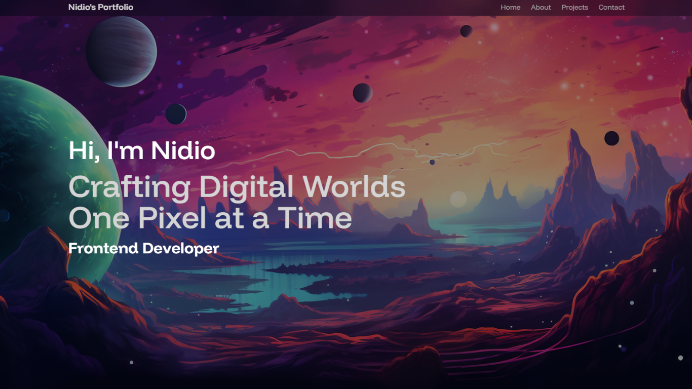

Saya adalah mahasiswa yang mempelajari Ilmu Komputer di Universitas pendidikan nasional. Saya memiliki ketertarikan dalam pengembangan web dan ingin memperdalam pengetahuan dalam HTML dan CSS.
Saat ini saya sedang menempuh semester ketiga di jurusan Ilmu Komputer. Saya mengambil kursus tentang dasar-dasar pengembangan web untuk meningkatkan keterampilan saya dalam bidang ini.
Anda dapat menghubungi saya melalui email di Hubungi Saya.
Berikut ini adalah proyek terakhir yang telah saya kerjakan:
Untuk informasi lebih lanjut, kunjungi website saya.